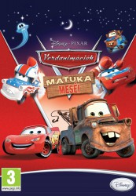

")
Alternativ: Mater's Tall Tales
 
 IMDB-Wertung: 7.0 / 10
IMDB-Wertung: 7.0 / 10  Metascore:
Metascore: 
Alle Folgen der Cars Toons spielen nach dem selben Schema: Hook erzählt Geschichten von etwas, das er in der Vergangenheit getan hat. Dabei stellt sich Hook in einem guten Licht dar. Sobald McQueen die Frage stellt, ob sich dies tatsächlich ereignet hat , antwortet Hook "Du erinnerst dich nicht mehr? Du warst doch dabei!". Anschliessend erzählt er seine Geschichte weiter und integriert dabei McQueen.
Jahr: 2008
Dauer: 35 Minuten
FSK:
Land: USA Studio: Walt Disney Company, TheTonspuren:
Untertitel: Deutsch,
Auflösung: 1080p (1920x1080) Größe: 1996 MB
Genre: Komödie, Abenteuer, Animation/Trick, Familie, TV-Serie
Regisseur: Rob Gibbs, John Lasseter, Victor Navone
Drehbuch: Pixar Animation Studios
Soundtrack:
Darsteller:
 Lori Alan als Additional Voice
Lori Alan als Additional Voice John Cygan als Additional Voice
John Cygan als Additional Voice Paul Eiding als Additional Voice
Paul Eiding als Additional Voice Jack Angel als Additional voice
Jack Angel als Additional voice George Carlin als Additional Voice
George Carlin als Additional Voice Laraine Newman als
Laraine Newman als  Stacy Keach als Skipper
Stacy Keach als Skipper Robert Ito als Ito San
Robert Ito als Ito San Bob Bergen als Additional Voice Talent
Bob Bergen als Additional Voice Talent Lloyd Sherr als Fillmore
Lloyd Sherr als Fillmore Jess Harnell als Additional Voices
Jess Harnell als Additional Voices Karen Huie als Additional Voices
Karen Huie als Additional Voices Teddy Newton als
Teddy Newton als  Katherine Helmond als Lizzie
Katherine Helmond als Lizzie Jan Rabson als Additional Voice
Jan Rabson als Additional VoiceDatei: X:\Kinder Disney HD\Cars\Hooks unglaubliche Geschichten (2008, FSK, 1920x1080).mkv seit 20.06.2017
Festplatte: Kinder-Filme+Trick
 Es gibt insgesamt 11 Filme in der Gruppe 'Kinder Disney HD\Cars'
Es gibt insgesamt 11 Filme in der Gruppe 'Kinder Disney HD\Cars'